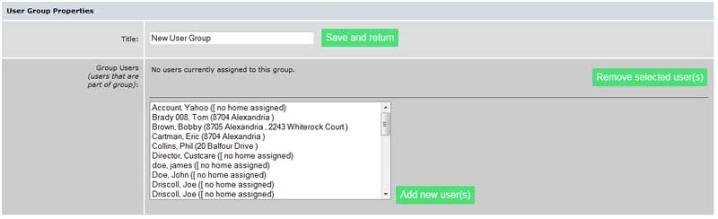
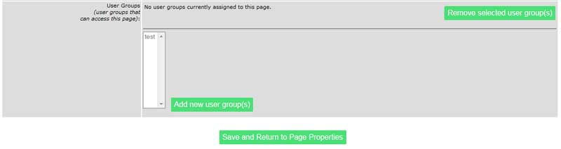
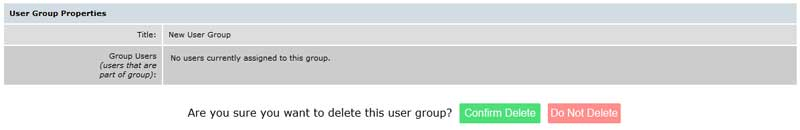

Working with User Groups: {{ugpanel.msg}}
User Groups are a convenient way to communicate with community groups (e.g. the Board, the Social Committee, the Architectural Review Committee, etc.) as a group.
- User Groups can be assigned to Pages, making those pages accessible to only the members of the assigned group (See the Pages guide for more detail).
- User Groups can be assigned to Request Forms, allowing the forms to be emailed to all members of the assigned groups (See the Request Form guide for more detail).
- User Groups can be assigned to Documents, making those documents available to only members of the assigned group (See the Documents guide for more detail).
If you are using the extended feature package option, you'll see the User Groups feature toward the bottom of the list on your features tab. If it's disabled, just click the "Enable" link.
Once you have made that selection, you will see a screen similar to the one shown below:
Title: Enter a title for the group you are adding, e.g. “Board Members.”
Group Users: Add all the users that make up this group by selecting them in the window at the bottom of the screen and clicking on the “Add new user(s)” button. You can add the users one-at-a-time, or in groups by highlighting the first one on the list, scrolling down to the last one and holding down the Shift key when you select it. Multiple non contiguous users may be selected by holding down the Ctrl key as you select each one.
When you have finished selecting the users, click on “Add new user(s)” then return to the top of the screen and select “Save and return”.
Once you've created a user group, you can assign it to any page or some features. If you do, only the users in that group will be able to access that section of the site.
To get started, edit any page or feature (not all features can be assigned to a user group). You'll have to set the "require user authentication" option to "yes" to enable the user groups option. Then, you'll be able to use the group selection box
Once you've chosen the group(s) to assign, click the "Add New user group(s) button and you're all set.
To delete an unused Group, select “Delete” on the User Group Listing screen next to the group you want to delete. You will see a screen like the one below. Select the “Confirm Delete” button if you are sure.
